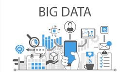

Posting Teratas

2. Pengambilan Keputusan Berbasis Data Dengan analitik yang kuat, organisasi dapat membuat keputusan strategis yang lebih tepat berdasarkan bukti yang dihasilkan dari data aktual, bukan hanya berdasarkan asumsi.
3. Meningkatkan Pengalaman Pelanggan Big Data memungkinkan perusahaan memahami kebutuhan, preferensi, dan perilaku pelanggan, sehingga dapat menyediakan layanan yang lebih personal dan relevan.
4. Inovasi Produk dan Layanan Data yang dihasilkan dapat menjadi sumber inspirasi untuk pengembangan produk atau layanan baru yang sesuai dengan permintaan pasar.
5. Mendukung Keamanan dan Pencegahan Risiko Analisis Big Data dapat membantu mendeteksi ancaman keamanan lebih dini, mengidentifikasi anomali, dan mencegah kerugian yang lebih besar.
BIG DATA
•Pengertian Big Data
Big Data adalah istilah yang menggambarkan volume
data yang besar, baik data yang terstruktur maupun data yang tidak
terstruktur. Big Data telah digunakan dalam banyak bisnis.
Tidak hanya besar data yang menjadi poin utama tetapi apa yang
harus dilakukan organisasi dengan data tersebut.
Big Data memungkinkan organisasi untuk mengolah, menganalisis,
dan menginterpretasikan data dalam jumlah besar untuk menghasilkan
wawasan yang mendalam dan mendukung pengambilan keputusan yang lebih baik.
Dalam era digital ini, data menjadi aset yang sangat berharga, dan
pengelolaan yang tepat dapat memberikan keuntungan kompetitif.
•Mengapa Big Data itu penting?
1. Meningkatkan Efisiensi Operasional Big Data membantu organisasi untuk mengidentifikasi pola dan tren dalam proses bisnis mereka, sehingga memungkinkan optimalisasi sumber daya dan pengurangan biaya operasional.2. Pengambilan Keputusan Berbasis Data Dengan analitik yang kuat, organisasi dapat membuat keputusan strategis yang lebih tepat berdasarkan bukti yang dihasilkan dari data aktual, bukan hanya berdasarkan asumsi.
3. Meningkatkan Pengalaman Pelanggan Big Data memungkinkan perusahaan memahami kebutuhan, preferensi, dan perilaku pelanggan, sehingga dapat menyediakan layanan yang lebih personal dan relevan.
4. Inovasi Produk dan Layanan Data yang dihasilkan dapat menjadi sumber inspirasi untuk pengembangan produk atau layanan baru yang sesuai dengan permintaan pasar.
5. Mendukung Keamanan dan Pencegahan Risiko Analisis Big Data dapat membantu mendeteksi ancaman keamanan lebih dini, mengidentifikasi anomali, dan mencegah kerugian yang lebih besar.